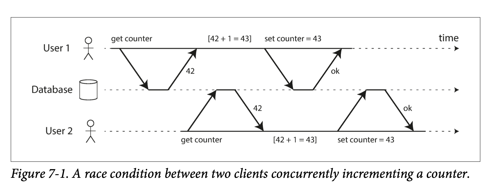
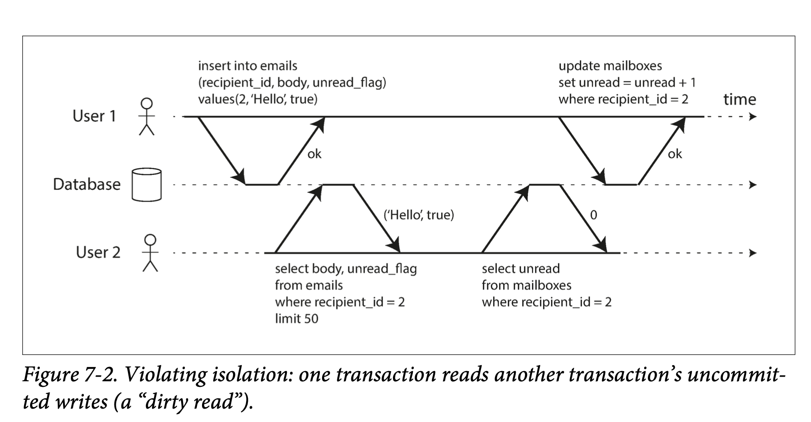
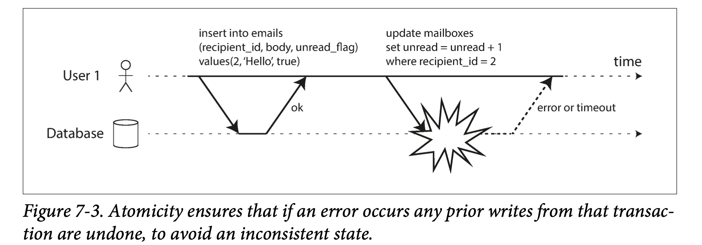
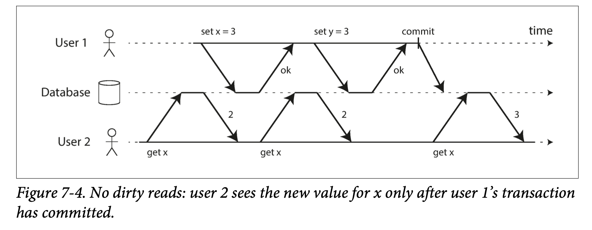
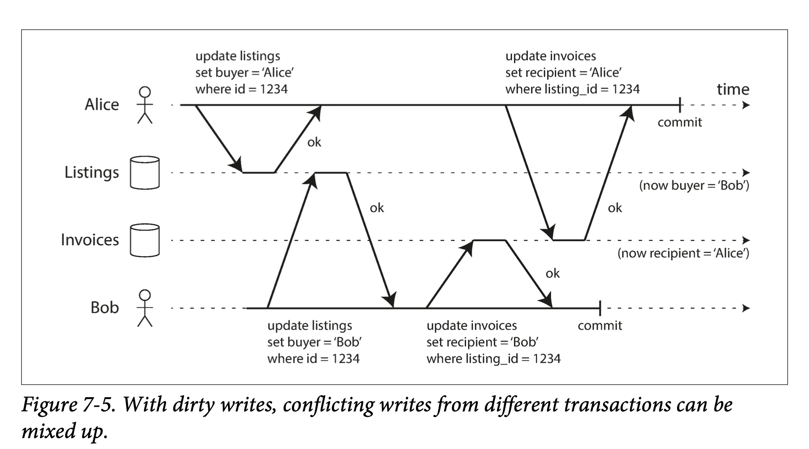
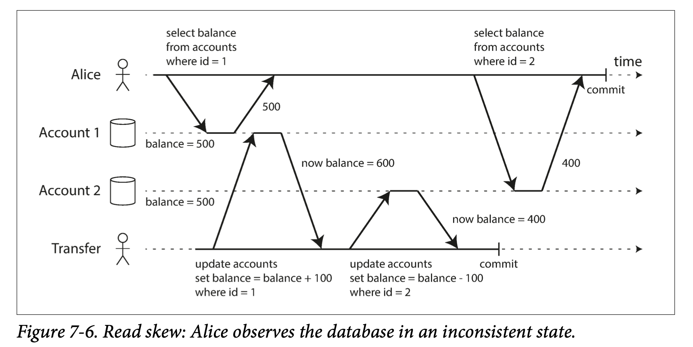
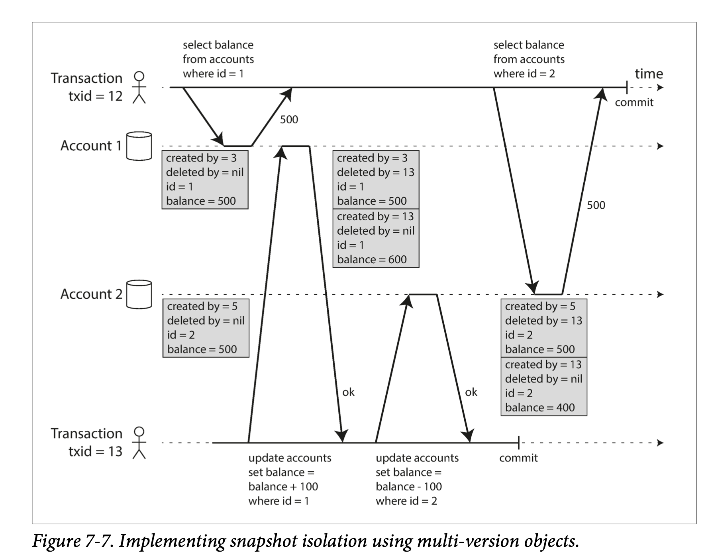
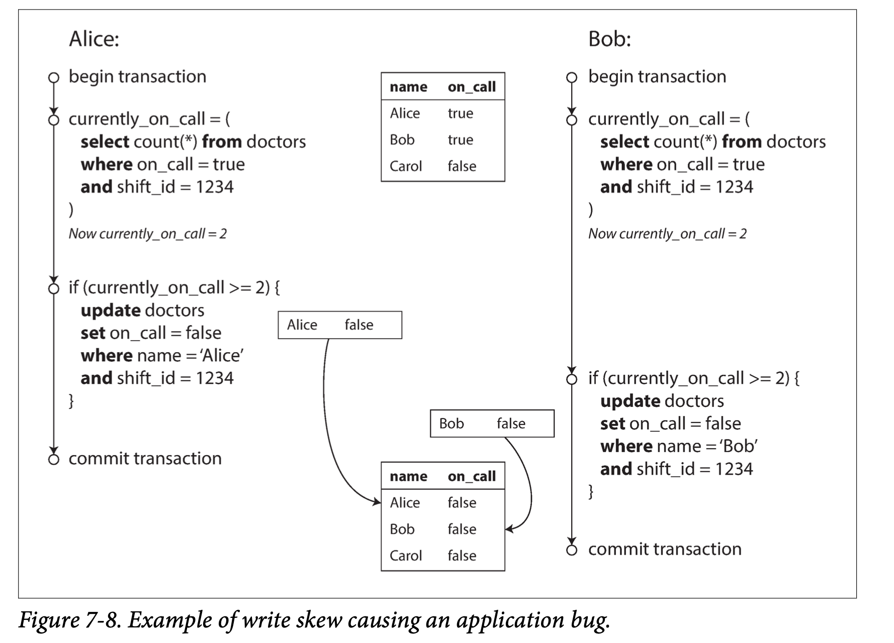
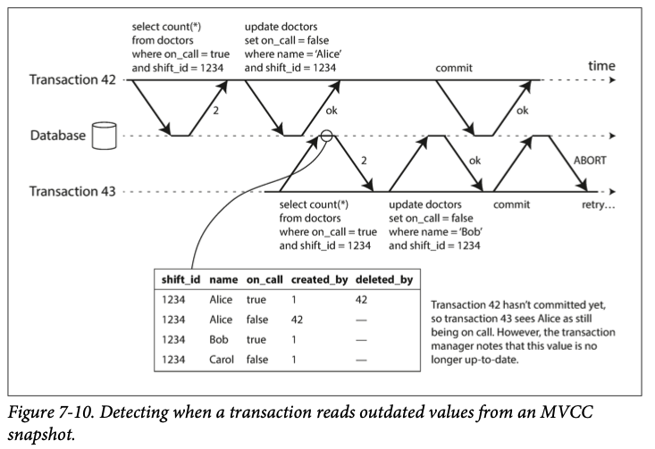
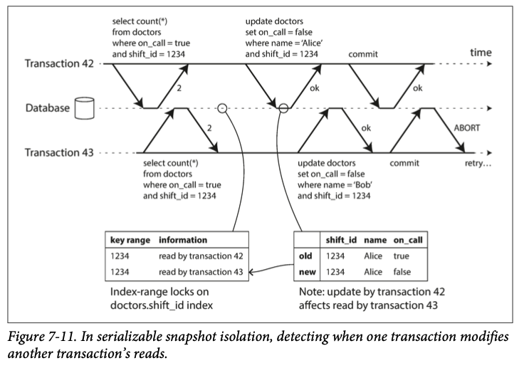

Chapter 7
In reality of database system, many things can go wrong. - DB software or hardware may fail at any time - The application that uses DB may crash at any time - Network might get interruption at anytime - Client may overwrite each other's changes - Race condition can cause surprising bugs
transactions have been the mechanism of choice for simplifying these issues.
What is transaction?¶
A transaction is a way for an application to group several reads and writes together into a logical unit: either the entire transaction succeeds (commit) or it fails (abort, rollback). If it fails, the application can safely retry.
Purpose of transaction¶
simplify programming model for accessing database. Application can ignore concurrency issues because database has safety guarantees
This chapter will talk about different race conditions and isolation levels such as read committed, snapshot isolation, and serializability
This chapter applies to both single node and distributed databases. Chapter 8 will focus on distributed problems only
Concept of Transactions¶
Almost all transactions supported by today's databases follow style that was introduced in 1975 by IBM System R.
The meaning of ACID¶
The safety guarantees provided by transactions can be described acronym ACID, which stands for Atomicity, Consistency, Isolation, and Durability.
In practice, one database's implementation of ACID is not same as another's implementation. Devil is in the details. ACID has become a marketing term.
Atomicity¶
Atomic refers to something that cannot be broken down into smaller parts. In multi-threaded programming, if one thread executes an atomic operation, that means there is no way that another thread could see the half-finished result of the operation.
The system could only see before or after the operation (not something in between)
But in the context of ACID, atomicity is not about concurrency. It does not describe what happens if several processes try to access the same data at the same time, because it is covered under the letter I for isolation
Atomicity basically is when client has multiple writes and one of them failed (disk become full, process crash, network interruption etc) then this transaction must be aborted or undo writes that has been made.
The ability to abort a transaction on error and have all writes from that transaction discarded is the defining feature of ACID atomicity. Perhaps abortability would have been a better term than atomicity, but we will stick with atomicity since that’s the usual word.
abortability might be a better term
Consistency¶
In the context of ACID, consistency refers to an application-specific notion of the database being in a "good state"
Basically this consistency is something application defines, for example, in an accounting system, credits and debits across all accounts must always be balanced.
so the letter C doesn't really belong in ACID
Isolation¶
This is related to concurrency Most databases are accessed by several clients at the same time, and when they access same database records, you need isolation level to help you prevent some issues that might occur

Isolation in the context of ACID means that concurrently executed transactions are isolated from each other. In textbook, isolation means serializability which means that each transaction can pretend that it is the only transaction running on the entire database. The database ensures that when the transactions have committed, the result is the same as if they had run serially
In practice, serializable isolation is rarely used, because it has performance penalty.
Durability¶
In single node, Durability is the promise that once transaction has been committed successfully, it is written to disk or WAL
In a replicated database, durability may mean the data is copied to some number of nodes.
Nothing is perfect, even after write to disk, there are still many problems that could occur - In replicated system, recent writes may be lost when the leader becomes unavailable - Disk firmware can have bugs, just like any other kind of software - Data on disk can gradually become corrupted without being detected - If SSD is disconnected from power, it can start losing data within a few weeks depending on the temperature
In practice, there is no one technique that can provide absolute guarantees. There are only various risk-reduction techniques, including writing to disk, replicating to remote machines, and backups—and they can and should be used together. As always, it’s wise to take any theoretical “guarantees” with a healthy grain of salt.
Single-Object and Multi-Object Operations¶
To recap, atomicity and isolation is what database should do if there are multiple write within the same transaction: Atomicity Abort if one of the writes failed. Isolation If one transaction makes several writes, then another transaction should see either all or none of those writes, but not in between
These definitions assume that you want to modify several objects at once. Such multi-object transactions are often needed.
For example,
SELECT COUNT(*) FROM emails WHERE recipient_id = 2 AND unread_flag = true

similarly, atomicity is needed when write failed 
Single Object writes¶
Atomicity and isolation also applies when single object/row is involved
Imagine writing a 20KB JSON document to a database - If network get interrupted after 10KB have been sent, does the database store that fragment of JSON? - If power fails during middle of overwriting the previous value on disk, do you end up with old and new value spliced together? - If another client reads while there is a write in progress, will it see partially updated value (dirty read)?
Atomicity can be implemented using a log (WAL) for crash recovery and isolation can be implemented using a lock on each object
There are atomic operations that is used by databases, read-modify-write cycle like figure 7-1 and similar one is compare-and-set operation, which allows a write to happen only if the value has not been concurrently changed by someone else
These single-object operations are useful because they can prevent lost updates. But they are not transactions. (more like atomic operation)
The need for multi-object transactions¶
Do we need multi-object transactions at all? Would it be possible to implement any application with only a k-v data model and single-object operations?
There are cases where writes to several different objects need to be coordinated: - In a relational data model, foreign key reference to a row in another table - In document data model, when denormalized information needs to be updated, we need to update several documents in one go. Transactions are very useful in this situation to prevent denormalized data from going out of sync. - Same as denormalized data, databases with secondary indexes also need to be updated every time you change a value.
Handling errors and aborts¶
ACID database are build based on this philosophy:
if the database is in danger of violating its guarantee of atomicity, isolation, or durability, it would rather abandon the transaction entirely than allow it to remain half-finished
Leaderless system does not follow this philosophy. It work on a "best effort" basis, which means "if it runs into an error, it won't undo something it has already done" so it's the application's responsibility to recover from errors.
Errors will inevitably happen and software developer prefer to think happy path rather than the intricacies of error handling.
ORM frameworks such as Django don't retry aborted transactions -- the error usually results in an exception bubbling up the stack.
This is a shame because the whole point of aborts is to enable safe retries.
There are still many subtleties when retrying an aborted transaction. - If the transaction actually succeeded, but the network failed while server send acknowledge. Then it will cause transaction perform twice - If there is overload, retrying will worsen the problem. limit the number of retries will help (use exponential backoff) - It is only worth retrying for transient error (permanent error retry is pointless) - If the transaction has side effects outside of database, those side effect may happen even if the transaction is aborted. For example, you don't want to resend an email if a transaction failed upon retry. This can be fixed by two phase commit
Weak isolation levels¶
When 2 transactions are modifying same data simultaneously, we need to take care of concurrency issues
Concurrency bug are hard to find by testing because it depends on timing and it is difficult to reproduce. It is also difficult to reason about because in large application you don't know which other piece of code are accessing database are accessing the database
For those reason, database use transaction isolation to hide concurrency issues from application developers
serializable isolation means that the database guarantees that transactions have the same effect as if they ran serially
In practice, serializable isolation has performance cost, therefore it is common for DB systems to use weaker levels of isolation, which protect against some concurrency issues, but not all.
This section will informally introduce those weak level of isolation
Read committed¶
This is the most basic level of isolation level. It makes 2 guarantees 1. When read from database, you only see data that has been committed (no dirty reads) 2. When writing to database, you will only write data that has been committed (no dirty writes)
No dirty reads¶
Dirty read basically mean if a transaction can see uncommitted data from another transaction, then it is called a dirty read
If a database is running on read committed isolation level, then it must prevent dirty reads. This means other transaction's write can only been seen after it is committed 
No dirty writes¶
What happens if two transactions concurrently try to update the same object in a database? We don't know which order the writes will happen, but we normally assume that the later write overwrites the earlier write.
What is dirty write?¶
If 2 transactions are writing to same object, and one of write from a transaction that is not committed gets overwritten by another transaction's write. This is called dirty write
Transactions running at read committed isolation level must prevent dirty writes, usually by delaying the second write until the first write's transaction has committed or aborted.
dirty writes can lead to several concurrency problems: - listing on sale needs to be updated to reflect the buyer and sales invoice needs to be sent to the buyer.  - read committed doesn't prevent the race condition between two counter increments in figure 7-1 because second write happens after first transactions has committed. So it's not a dirty write.
Implementing read committed¶
Most commonly, databases prevent dirty writes by using row-level locks. It must hold that lock for any given object; if another transaction wants to write to the same object, it must wait until current transaction is committed or aborted before it can acquire the lock and continue
However this approach does not work well in practice because one long-running write transaction can force many read-only transactions to wait until the long-running transaction has completed. For this reason, most databases prevent dirty reads by simply return old value if new write has not been committed yet
Snapshot Isolation and Repeatable Read¶
Read committed still can have concurrency bug 
where total balance went from 1000 to 900 due to read before transaction and another part of read is done after a update transaction is committed
This $100 vanished anomaly is called a nonrepeatable read or read skew
This case if fine if Alice refresh her web page, but there are circumstances where this is not acceptable Backups Taking a backup requires making a copy of the entire database, which may take hours on a large database. During backup, writes will continue to be made to the database. Thus we could end up with some part of the backup containing an older version and other parts containing a newer version
Analytic queries and integrity checks When running queries that scans over large parts of the database (which is common in analytic workload). These queries are likely to return nonsensical results if they observe parts of the database at different points in time
Snapshot isolation ref is the most common solution to this problem. The idea is that each transaction reads from consistent snapshot (which means this transaction can see all the data that was committed in the database at the start of this transaction) of the database
When a transaction can see a consistent snapshot of the database, frozen at a particular point in time, it is much easier to understand.
Implementing snapshot isolation¶
Like read committed isolation, snapshot isolation use write locks to prevent dirty writes. However, reads do not require any locks. Basically a key principle of snapshot isolation is readers never block writers
To implement snapshot isolation, databases use a generalization of the mechanism we saw for preventing dirty reads
The database must keep several different committed versions of an object, because various in-progress transactions may need to see the state of the database at different points in time.
When multiple versions are maintained at the same time, this method is also called multi version concurrency control (MVCC)
If a database only needed to provide read committed isolation, but not snapshot isolation, it would be sufficient to keep 2 versions of an object: - The committed version - Overwritten but not yet committed version
A typical approach for MVCC is to use a separate snapshot for each query 
Visibility rules for observing a consistent snapshot¶
Database can present a snapshot of database to application by following: 1. At start of each transaction, the database makes a list of all the other transactions that are in progress 2. Any writes made by aborted transactions are ignored. 3. Any writes made by transactions with a later txn ID are ignored, regardless of whether subsequently commit. 4. All other writes are visible to the application queries
Indexes and snapshot isolation¶
How do indexes work in multi-version database? 1 option is to have the index simply point to all versions of an object and require an index query to filter out any object versions that are not visible to the current transaction.
Another approach is used in CouchDB, Datomic, and LMDB. Although they also use B-trees (see “B-Trees” on page 79), they use an append-only/copy-on-write variant that does not overwrite pages of the tree when they are updated, but instead creates a new copy of each modified page. Parent pages, up to the root of the tree, are copied and updated to point to the new versions of their child pages. Any pages that are not affected by a write do not need to be copied, and remain immutable [33, 34, 35].
Repeatable read and naming confusion¶
Snapshot isolation is a useful isolation level, especially for read-only transactions. However, many databases that implement it call it by different names. In Oracle it is called serializable, and in PostgreSQL and MySQL it is called repeatable read [23].
It comes from System R
The reason for this naming confusion is that the SQL standard doesn’t have the concept of snapshot isolation, because the standard is based on System R’s 1975 definition of isolation levels [2] and snapshot isolation hadn’t yet been invented then. Instead, it defines repeatable read, which looks superficially similar to snapshot isola‐ tion.
Preventing Lost Updates¶
The read committed and snapshot isolation level talked so far primarily concern with guarantees about read operation when concurrent write happens. There are several other interesting kinds of conflict that can occur between concurrently writing transactions. The best known is lost update problem
When read-modify-write cycle happens, then following scenario might have lost update
- Incrementing a counter or updating an account balance (requires reading the current value, calculating the new value, and writing back the updated value)
- Making a local change to a complex value, e.g., adding an element to a list within a JSON document (requires parsing the document, making the change, and writing back the modified document)
- Two users editing a wiki page at the same time, where each user saves their changes by sending the entire page contents to the server, overwriting whatever is currently in the database
A variety of solution have been developed
Atomic write operations¶
Atomic update remove the need to implement read-modify-write cycles in application code.
for example
UPDATE counters SET value = value + 1 WHERE key = 'foo';
Atomic operations are usually implemented by taking an exclusive lock on the object when it is read so that no other transactions can read it until the update has been applied.
However, ORM framework doesn't always translate atomic update to SQL very well
Explicit locking¶
Another option is to let application explicitly lock the object it is trying to modify. Then the application can perform a read-modify-write cycle. If any other transaction tries to concurrently read the same object, it is forced to wait until the first read-modify-write cycle has completed For example, multiple player want to move a figure
BEGIN TRANSACTION;
SELECT * FROM figures
WHERE name = 'robot' AND game_id = 222
FOR UPDATE; -- 1
UPDATE figures SET position = 'c4' WHERE id = 1234;
COMMIT;
The FOR UPDATE clause indicates that the database should take a lock on all rows returned by this query.
This works but requires careful thinking in application code where to lock because it is easy to forget to add necessary code.
Automatically detecting lost updates¶
Previous 2 method are ways of preventing lost updates by forcing the read-modify-write cycles to happen sequentially.
An alternative is to allow them execute in parallel, and if transaction manager detects a lost update, abort the transaction and force it to retry its read-modify-write cycle.
This approach allows databases can perform its check in parallel with snapshot isolation
Indeed, PostgreSQL’s repeatable read, Oracle’s serializable, and SQL Server’s snapshot isolation levels automatically detect when a lost update has occurred and abort the offending transaction. However, MySQL/ InnoDB’s repeatable read does not detect lost updates [23].
Martin didn't mention how to implement this
Compare-and-set¶
In databases that don't provide transactions, you sometimes find an atomic compare-and-set operation(similar to CPU atomic operation?). The purpose of this operation is to avoid lost updates by allowing an update to happen only if the value has not changed since you last read it.
If the current value does not match what you previously read, read-modify-write cycle must be retried.
-- This may or may not be safe, depending on the database implementation
UPDATE wiki_pages SET content = 'new content'
WHERE id = 1234 AND content = 'old content';
However, if the database allows the WHERE clause to read from an old snapshot, this statement may not prevent lost updates, because the condition may be true even though another concurrent write is occurring.
Conflict resolution and replication¶
When transaction involves in replicated(distributed) database, things get to another level: because data reside in multiple nodes, and data can potentially be modified concurrently on different nodes, some additional steps need to be taken to prevent lost updates.
locks and compare-and-set assume there is single node（single up to date copy of the data. Databases with multi-leader or leaderless replication usually allow several writes to happen, so there is no guarantee of single up-to-date copy of the data.
A common approach discussed previously was to allow multiple version exist at the same time (allow concurrent writes to create several conflicting versions of a value) and use application code or special data structure to resolve and merge these versions after the fact.
Atomic operations can work well in replicated context, especially if they are commutative (different order doesn't effect the result), for example, add an element to a set, incrementing a counter etc.
On the other hand, the last write wins (LWW) conflict resolution method is prone to lost updates, as discussed in “Last write wins (discarding concurrent writes)” on page 186. Unfortunately, LWW is the default in many replicated databases.
Write skew and Phantoms¶
dirty writes and lost updates are two kinds of race condition we went through so far. There are other conflicts
For example, if an application is managing doctor oncall shifts at a hospital. The hospital usually have several doctors oncall at the same time. (Must have at least one doctor on call).
Doctors can give up their shifts, provided there is 1 doctor is on call. 
This is known as write skew. It is neither dirty write nor lost update because 2 transaction are updating 2 different rows
we can think of write skew as a generalization of lost update problem.
Write skew can occur if two transactions read the same objects, and then update some of those objects (different transactions may update different objects). In the special case where different transactions update the same object, you get a dirty write or lost update anomaly (depending on the timing).
dirty write or lost update is subset (only update single item from multiple transactions) of write skew
If you can’t use a serializable isolation level, the second-best option in this case is probably to explicitly lock the rows that the transaction depends on. In the doc‐ tors example, you could write something like the following:
BEGIN TRANSACTION;
SELECT * FROM doctors
WHERE on_call = true
AND shift_id = 1234 FOR UPDATE; --lock all rows
UPDATE doctors
SET on_call = false WHERE name = 'Alice' AND shift_id = 1234;
COMMIT;
More examples of write skew¶
- Meeting room booking system
- Multiplayer game (move different figures on the board at the same time)
- Claiming a username
- Preventing double-spending
Phantoms causing write skew¶
You can see the pattern now, 1. SELECT query checks some requirement is satisfied or not 2. Depending on the result of first query, application code decides how to continue 3. Makes a write to DB and commit the transaction
This effect, where a write in one transaction changes the result of a search query in another transaction is called a phantom
snapshot isolation prevent phantom read but not write skew
Serializability¶
This is not a new problem—it has been like this since the 1970s, when weak isolation levels were first introduced [2]. All along, the answer from researchers has been sim‐ ple: use serializable isolation!
Serializable isolation is usually regarded as the strongest isolation level. It guarantees that even though transactions may execute in parallel, the end result is the same as if they had executed one at a time, serially, without any concurrency.
But if serializable isolation is so much better than the mess of weak isolation levels, then why isn’t everyone using it?
3 options - Literally executing transactions in a serial order - Two-phase locking - Optimistic concurrency control techniques such as serializable snapshot isolation
This chapter talks those in single node. Chapter 9 will talk about those in distributed setting
Actual Serial Execution¶
Basically execute only one transaction at a time, in serial order, on a single thread.
Even though this seems like an obvious idea, database designers only fairly recently— around 2007—decided that a single-threaded loop for executing transactions was feasible [45].
why? - RAM became cheap enough that for many use cases is now feasible to keep the entire active dataset in memory - Database designers realized that OLTP transactions are usually short and only make a small number of reads and writes
The approach of executing transactions serially is implemented in VoltDB/H-Store, Redis, and Datomic [46, 47, 48]
A system designed for single-threaded execution can sometimes perform better than a system that supports concurrency, because it can avoid the coordination overhead of locking. However, its throughput is limited to that of a single CPU core.
You can increase the throughput to multiple CPU by partitioning the dataset
Summary of serial execution¶
- Every execution of txn must be small and fast
- active dataset should fit in memory.
- Write throughput must be low enough to be handled by a single CPU core or else transactions need to be partitioned
Two-Phase Locking (2PL)¶
2PL was the only one widely used algorithm for around 30 years
2PL is similar to regular lock but makes lock requirements much stronger.
Several transactions are allowed to concurrently read the same object as long as nobody is writing to it. But as soon as anyone wants to write, exclusive access is required
-
If transaction A has read an object and transaction B wants to write to that object, B must wait until A commits or aborts before it can continue. (This ensures that B can’t change the object unexpectedly behind A’s back.)
-
If transaction A has written an object and transaction B wants to read that object, B must wait until A commits or aborts before it can continue. (Reading an old version of the object, like in Figure 7-1, is not acceptable under 2PL.)
In 2PL, writers don’t just block other writers; they also block readers and vice versa. Snapshot isolation has the mantra readers never block writers, and writers never block readers
implementation of 2PL¶
The blocking of readers and writers is implemented by a having a lock on each object in the database. The lock can either be in shared mode or in exclusive mode. The lock is used as follows:
-
If a transaction wants to read an object, it must first acquire the lock in shared mode. Several transactions are allowed to hold the lock in shared mode simultaneously, but if another transaction already has an exclusive lock on the object, these transactions must wait.
-
If a transaction wants to write to an object, it must first acquire the lock in exclusive mode. No other transaction may hold the lock at the same time (either in shared or in exclusive mode), so if there is any existing lock on the object, the transaction must wait.
-
If a transaction first reads and then writes an object, it may upgrade its shared lock to an exclusive lock. The upgrade works the same as getting an exclusive lock directly.
-
After a transaction has acquired the lock, it must continue to hold the lock until the end of the transaction (commit or abort). This is where the name “two-phase” comes from: the first phase (while the transaction is executing) is when the locks are acquired, and the second phase (at the end of the transaction) is when all the locks are released.
Prevent phantom¶
Phantom is when one transaction changing the result of another transaction's search query
To solve this problem, we need a predicate lock [3]. It works similarly to the shared/exclusive lock described earlier, but rather than belonging to a particular object (e.g., one row in a table), it belongs to all objects that match some search condition, such as:
SELECT * FROM bookings
WHERE room_id = 123
AND end_time > '2018-01-01 12:00'
AND start_time < '2018-01-01 13:00';
Serializable Snapshot Isolation (SSI)¶
This chapter has painted a bleak picture of concurrency control in databases.
weaker isolation level have concurrency issues and serializable isolation has performance issue
An algorithm called serializable snapshot isolation (SSI) is very promising. It provides full serializability, but has only a small performance penalty compared to snapshot isolation. SSI is fairly new: it was first described in 2008 [40] and is the subject of Michael Cahill’s PhD thesis [51].
PostgreSQL MVCC (snapshot isolation implementation)
Pessimistic versus optimistic concurrency control¶
Two-phase locking is a so-called pessimistic concurrency control mechanism: it is based on the principle that if anything might possibly go wrong (as indicated by a lock held by another transaction), it’s better to wait until the situation is safe again before doing anything. It is like mutual exclusion, which is used to protect data structures in multi-threaded programming.
serial execution is pessimistic to the extreme
By contrast, serializable snapshot isolation is an optimistic concurrency control technique. Instead of blocking, transaction continue anyway and hope everything turn out alright.
When transaction wants to commit, the database checks whether anything bad happened (read skew, dirty writes, write skew). If anything goes bad, transaction is aborted and has to be retried.
As the name suggests, SSI is based on snapshot isolation—that is, all reads within a transaction are made from a consistent snapshot of the database. On top of snapshot isolation, SSI adds an algorithm for detecting serialization conflicts among writes and determining which transaction to abort.
Decisions based on an outdated premise¶
Write skew could happen when a premise is outdated. (i.e. when transaction reads some data and examine the result of the query, and decide to take some action based on the result that it saw)
When application makes a query (how many doctors are currently oncall?) the database doesn't know how the application logic uses the result of that query. so database needs to assume any change in the query result (the premise) that writes in that transaction may be invalid.
How to detect outdated premise? There are 2 cases to consider: - Detecting reads of a stale MVCC object version - Detecting writes that affect prior reads
Detecting stale MVCC reads¶
When a transaction reads from consistent snapshot in an MVCC database, it ignores writes that has not been committed yet (which is transaction 42 below) So transaction 43 see Alice is still oncall. However, by the time transaction 43 wants to commit, transaction 42 is already committed. Then transaction 43's premise is no longer true
database basically tracks all premise made by all transactions and check when a transaction wants to commit, wether its premise is updated by a committed transaction or not 
Why wait until commiting? Why not just abort transaction 43 immediately when stale read is detected? If transaction 43 is read only transaction, it wouldn't need to be aborted (no way of write skew).
At the time of transaction 43 make a read, database doesn't know whether this transaction is going to perform a write.
Moreover, transaction 42 may abort so the read may turn out not to be stale after all.
Detecting writes that affect prior reads¶
In context of 2 phase locking, index-range locks allow the database to lock access to all rows matching some search query, such as WHERE shift_id = 1234. Similar technique is used except SSI locks don't block other transactions
 Database can use index entry 1234 to record the fact that transaction 42 and 43 read this data.
When a transaction writes to the database, it must look in the indexes for any other transactions that have read the affected data. This process is similar to acquiring a write lock, but rather than blocking until the readers have committed, the lock simply notifies the transactions that the data they read may no longer be up to date.
In the graph above, transaction 42 notifies 43 that its prior read is outdated and vice versa. Transaction 42 is first to commit and it is successful because 43 is not committed yet.
When 43 wants to commit, conflict write from 42 is already committed so 43 must abort
Performance of serializable snapshot isolation¶
As always, many engineering details affect how well an algorithm works in practice. For example, one trade-off is the granularity at which transactions’ reads and writes are tracked. If the database keeps track of each transaction’s activity in great detail, it can be precise about which transactions need to abort, but the bookkeeping overhead can become significant. Less detailed tracking is faster, but may lead to more transactions being aborted than strictly necessary. In some cases, it’s okay for a transaction to read information that was overwritten by another transaction: depending on what else happened, it’s sometimes possible to prove that the result of the execution is nevertheless serializable. PostgreSQL uses this theory to reduce the number of unnecessary aborts [11, 41].
Compared to two-phase locking, the big advantage of serializable snapshot isolation is that one transaction doesn’t need to block waiting for locks held by another transaction. In particular, read-only queries can run on a consistent snapshot without requiring any locks, which is very appealing for read-heavy workloads.
Summary¶
Transaction is an abstraction layer from database that allows application to ignore certain concurrency issues and hardware faults.
A large class of errors is reduced down to a simple transaction aborts and application just need to retry
simple read and write in single record can manage without transactions. But for more complex access patterns, transactions can reduce the number of potential error cases for application developer
Without transactions, various error scenarios (process crashing, network interruption, power outages, disk full, unexpected concurrency, etc) mean data can become inconsistent (denormalized data can easily go out of sync)
This chapter went deep into topic of concurrency control of database. It discussed several widely used isolation levels: - Read committed - snapshot isolation - Serializable
It characterized those isolation levels by discussing different race conditions Dirty reads One client reads another client’s writes before they have been committed. The read committed isolation level and stronger levels prevent dirty reads. Dirty writes One client overwrites data that another client has written, but not yet committed. Almost all transaction implementations prevent dirty writes. Read skew (bank example) A client sees different parts of the database at different points in time. This issue is most commonly prevented with snapshot isolation, which allows a transaction to read from a consistent snapshot at one point in time. It is usually implemented with multi-version concurrency control (MVCC). Lost updates (counter example) Two clients concurrently perform a read-modify-write cycle. One overwrites the other’s write without incorporating its changes, so data is lost. Some implemetations of snapshot isolation prevent this anomaly automatically, while others require a manual lock (SELECT FOR UPDATE). Write skew (doctor example) A transaction reads something, makes a decision based on the value it saw, and writes the decision to the database. However, by the time the write is made, the premise of the decision is no longer true. Only serializable isolation prevents this anomaly. Phantom reads A transaction reads objects that match some search condition. Another client makes a write that affects the results of that search. Snapshot isolation prevents straightforward phantom reads, but phantoms in the context of write skew require special treatment, such as index-range locks.
Weak isolation level require application developer to handle errors manually. Only serializable isolation protects against all of these issues 3 approaches of implementing serializable transactions are discussed: Literally executing transactions in a serial order If you can make each transaction very fast to execute, and the transaction throughput is low enough to process on a single CPU core, this is a simple and effective option. Two-phase locking When acquiring write lock, it needs to wait for all readers to commit. When acquiring reader lock, it needs to wait for write lock (if there is any) For decades this has been the standard way of implementing serializability, but many applications avoid using it because of its performance characteristics. Serializable snapshot isolation (SSI) A fairly new algorithm that avoids most of the downsides of the previous approaches. It uses an optimistic approach, allowing transactions to proceed without blocking. When a transaction wants to commit, it is checked, and it is aborted if the execution was not serializable.
The examples in this chapter used a relational data model. However, transactions are a valuable database feature, no matter which data model is used.
This chapter discussed those in the context of single machine. Transactions in distributed databases open a new set of difficult challenges, which will be discussed in next 2 chapters